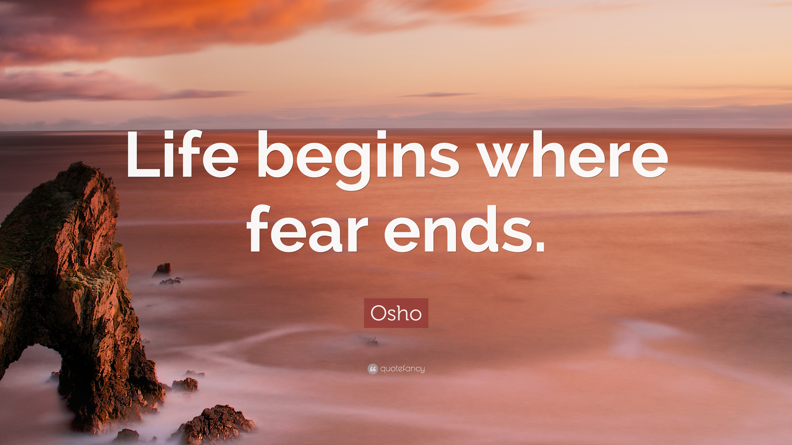

<!DOCTYPE html>
<html lang="en">
<head>
    <meta charset="UTF-8">
    <meta name="viewport" content="width=device-width, initial-scale=1.0">
    <title>Practice Set 8</title>
    <style>
        .progress{
            background-color:red;
            height:3px;
            animation:load 1s ease-in-out 1;
        }
        *{
            margin:0;
            padding:0;
        
        }
        header{
            height:122px;
            background-color:black;
        }
        main{
            height:899px;
            background-color: blueviolet;
        }
        @keyframes load{
            0%{
                width:0;
            }
            50%{
                width:90vw;
            }
            100%{
                width:100vw;
            }
        }
        img{
  width: 300px;
  animation: rotation 6s infinite linear;
}

@keyframes rotation {
  from {
    transform: rotate(0deg);
  }
  to {
    transform: rotate(360deg);
  }
}
.slider{
    background-color:aqua;
    height:523px;
    width:100vw;
}
      
    </style>
</head>
<body>
    <div>
        <div class="progress"></div>
    </div>
    <header></header>
    <main>
        <!-- 
        
   <div class="slider">
    

   </div>
    </main>
   
    <div class="practice set 8">
        <p>
            <b>
                <pre>
                    Chapter – 8 (Practice Set)
1-Create a thin progress bar animation for a website.
2-Create the same progress bar using transition.
3-Create a rotating image animation using CSS.
4-Create a slider with 3 images using CSS.
                </pre>
            </b>
        </p>
    </div>
</body>
</html>